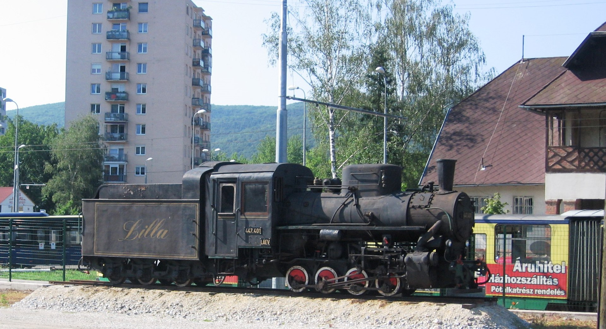
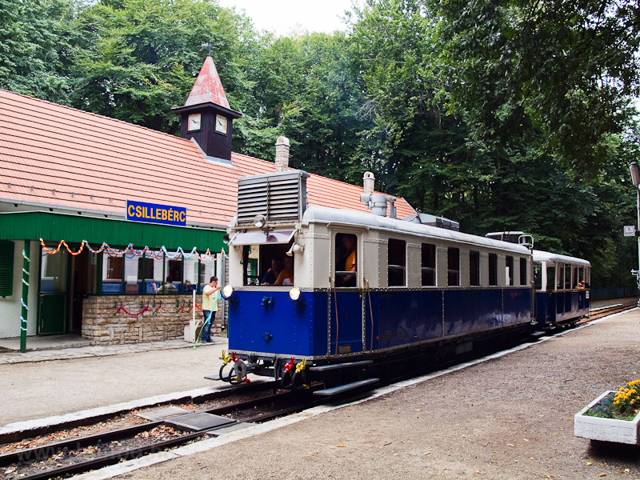
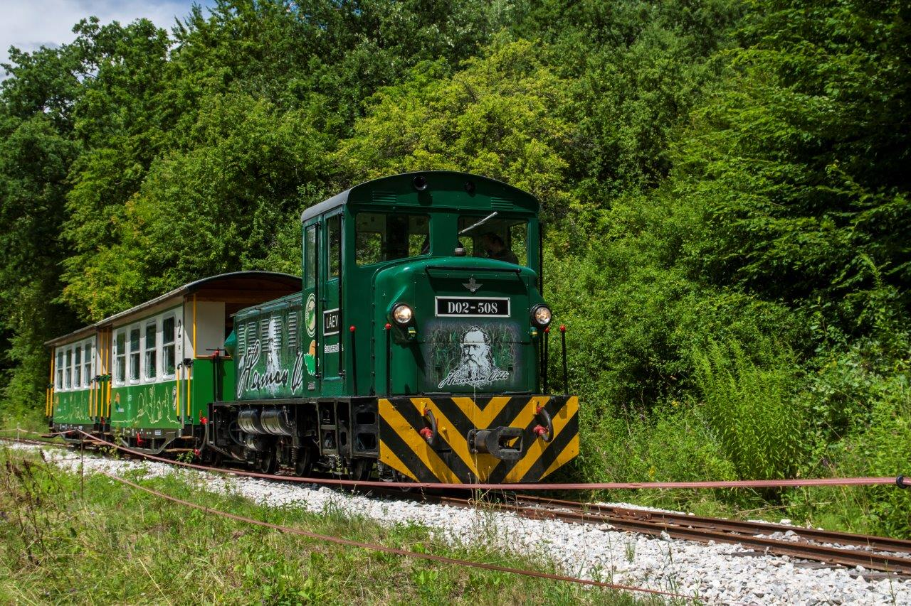
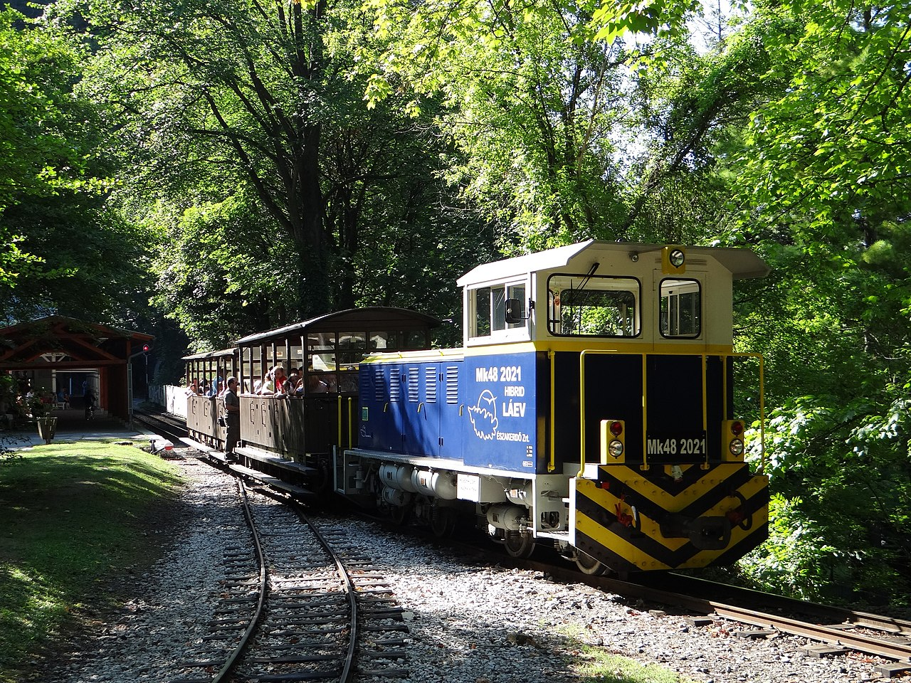
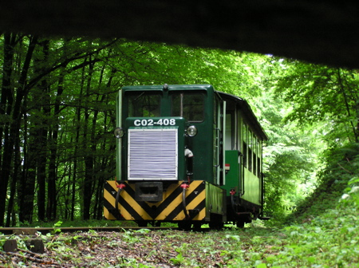
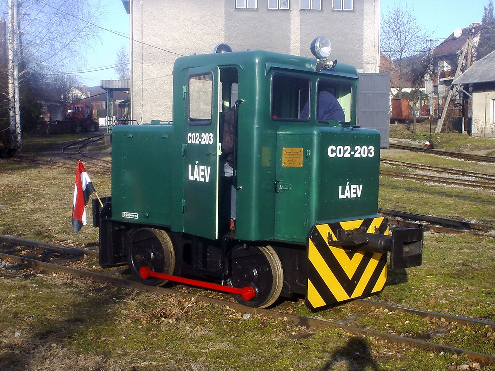
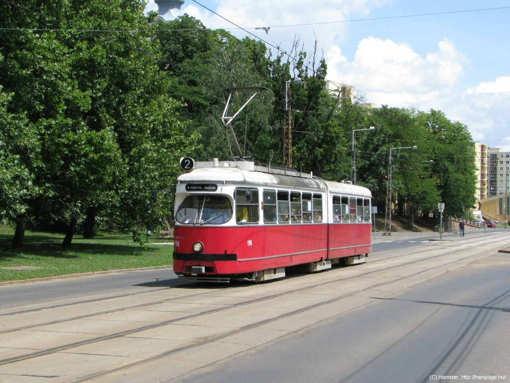

A Lillafüredi Állami Erdei Vasút (rövidítve: LÁEV) egy erdei vasút Miskolcon és annak környékén, a Bükk-vidék keleti területén. A vasútüzemet a Bükkben kitermelt faáru, illetve a Diósgyőri szénbánya szenének szállítására hozták létre, a személyszállítás csak később indult meg. Aztán a teherszállítás egyre inkább a közútra tért át, így egyedül a személyszállítás, azon belül is a turizmus maradt meg az egyetlen feladatkörnek. Egy 2014-es országos felmérés szerint a budapesti Gyermekvasút után a lillafüredi Magyarország második legforgalmasabb kisvasútja. A kisvasúti napja: május negyedik szombatja, üzemeltetője az Északerdő Zrt.
Jelenlegi vasútvonalak
A LÁEV két vasútvonallal rendelkezik, ám rendszeres menetrendszerű forgalom csak a fővonalon van.
- A fővonal, azaz a 330-as számú vasútvonal Miskolcról indul, városi végállomása Észak-Kiliánban, a Dorottya utcán van, a lakótelep mellett. Az első körülbelül 3 km hosszon kertvárosi részen, illetve a diósgyőri panelházak és az északi dombok közt halad, itt található a forgalmi telep is , Majláth megállóhely előtt. A várost elhagyva a továbbiakban az erdőben vezet a vonal a Szinva völgyében. A Papírgyárnál leválik róla a szárnyvonal, és így tart tovább az erdőben Lillafüred felé hidakon, sziklaszorosokon át. Lillafüred állomást két alagút szegélyezi, mindkettő hossza külön-külön kicsit több, mint 110 m. Lillafüredet elhagyva a Hámori-tó partján, majd az Őskohó mellett halad tovább a pálya a Garadna-völgyben és az egykori élénk teherszállítás emlékeit érintve éri el a végállomást, Garadnát. A fővonalon rendszeres menetrend szerinti forgalom van, téli menetrend szerint csak hétvégente, nyári menetrend szerint a hét minden napján. Főidőszakban két vonat közlekedik az egyvágányos pályán, ezek Puskaporos kitérőnél találkoznak.
- A Mahócai szárnyvonalon, azaz a 331-es számú vasútvonalon nincs rendszeres forgalom, csak alkalmi különvonatok közlekednek rajta. Eredetileg ez a szárnyvonal hosszabb volt, ám ma már csak Mahócáig van meg a pálya. A fővonalból a Papírgyárnál ágazik ki, és onnantól sokkal szűkebb ívekben halad. Ebből az okból, illetve a pálya gyengébb felépítésének köszönhetően a hosszabb Bax és Nagy- MÁV kocsik nem, a nehezebb Mk48-as mozdonyok csak ritkábban közlekednek rajta. Útvonala már-már a Bükk északi szélén megy, és Chinoin, Erdei- Iskola, Ortástető majd Andó-kút érintésével éri el a jelenlegi végpontját, Mahócát.
Járműállomány
Vontató járművek
- A vasútüzem elindulásakor természetesen csak gőzmozdonyok közlekedek, ám ezekről nem nagyon maradtak fenn források. Az egyetlen ma is itt található gőzmozdony a szerkocsis Kv-4 típusú gőzös. A szerkocsis kivitelezés a magyarországi kisvasutakon nem volt túl elterjedt, a szertartályos mozdonyok sokkal jellemzőbbek voltak. A Kv-4 típusból 240 db készült Magyarországon, ám itt csak 6 példány állt forgalomba, a többit háborús jóvátételi díjként exportálták. A Lillafüredre került egy darab (447 401) ilyen típusú gőzös 1954-ben lett gyártva és egyből itt állították szolgálatba. Elsősorban a fővonalon közlekedett, de a Mahócai szárnyvonalon is megfordult. A gőzvontatás megszüntetéséig, 1972-ig forgalomban maradt, utána megőrizték és kiállították. Később felmerült a nosztalgiaüzem gondolata, ezért felújították és 2000-től 2008-ig újra dolgozott, nosztalgiajáratokkal. Jelenleg nem üzemképes, ezért ma már ismét csak a szobormozdony funkciót tölti be Majláthon.

- A Palotaszálló építésével egy időben, 1929-ben motorvonatot helyeztek üzembe. Ebből az egyedi típusból 2 példányt vásároltak. Ezek az Ab amot-1 és Ab amot-2 motorkocsik voltak, a maguk korában csúcstechnológiának számítottak. 1948-ban és 1949-ben Gyermekvasútra szállították a két motorkocsit és a hozzájuk tartozó két pótkocsit. Néhány év használat után, 1951-ben és 1963-ban a kölcsönadott járműveket visszaszállították a LÁEV-hez, ahol tovább használták őket. 1977-ben az A02-601-es kikerült a forgalomból és sajnálatos módon elbontották. Az A02-602 motorkocsit a Közlekedési Múzeum védetté nyilvánította, így megakadályozták az elbontását. Ez a motorkocsi Lillafüreden utoljára 1982. április 24-én közlekedett. Felújítása és nosztalgiavonatként való üzemeltetése már akkor felmerült, erre azonban anyagiak híján nem került sor. A jármű 1990 óta a Gyermekvasúton szolgál nosztalgiavonatként.

- A fővonalon a vonatokat leginkább az Mk48 típusú mozdonyok vontatják. Ez a típus Magyarországon igen elterjedt, sok más kisvasúton is megtalálhatóak. A vasútüzemnél négy ilyen jármű maradt, dízel-hidraulikus erőátvitellel, melyet egy kivételvel 2020-től kezdve átépítettek vagy fognak átépíteni dízel-villamos üzeműre. Ezen mozdonyok LÁEV-nél használt pályaszámai D02-501, D02-506, D02-508 és D02-510. Az 508-ast az erdészet megrendelésére készítették és gyártása után egyből itt állították forgalomba, a többit a MÁV megrendelésére más kisvasutakhoz szállítottak, csak később kerültek a LÁEV-hez. Két mozdony barna, kettő zöld festésű, motorjaik teljesítménye egyenként 100 kW.

- Az Mk48 típus átépítéséből született hibrid mozdony a világ első keskeny nyomtávú hibrid mozdonya. Ebből a mozodnytípusból csak egy van a kisvasúton, pályaszáma Mk48 2021. A mozdonyt a BoBo kft. építette egy korábban leselejtezett Mk48-as felhasználásával. A mindössze 9 hónap alatt kifejlesztett mozdonyt 2010-ben ünnepélyesen helyezték üzembe, mint a világ első kisvasúti hibrid mozdonyát. Festése kék színű, akárcsak a maga korában szintén csúcstehnológiának számító motorvonatoknak volt. A mozdony teljesítménye 130 kW. További három hibrid mozdony a már eleve itt közlekedő hidraolikus mozdonyok átépítéséből született.

- A magyarországi kisvasutakon szintén elterjedt, de az Mk48-tól kisebb, 37 kW teljesítményű C-50 típusú dízelmozdonyból napjainkban kettő (C02-407,408) található meg itt. Eredetileg 6 db dolgozott ezen a vasúton, és tehervonatokat továbbítottak. A 6 fős flottából napjainkra csak egy maradt itt, valamint 2005-ben vettek még egy darabot használtan. Kis teljesítményük miatt leginkább csak pályafenntartó- és a Mahócai szárnyvonal különvonatait továbbítják.

- A LÁEV legkisebb mozdonya (C-02-203) a mindössze 19,5 kW teljesítményű B–26 típus. Különlegessége, hogy a típusának egyetlen megmaradt példánya. Eredetileg a Szerencsi cukorgyár kisvasútján közlekedett, a LÁEV-hez 2004-ben került. Kis teljesítménye miatt leginkább csak különleges alkalmakkor használják.

- A kisvasútnak az volt a terve, hogy két kiselejtezett miskolci bécsi eredetű E1-es villamosból modern motorkocsit csinál. A két villamost meg is vásárolták és elszállították a telephelyre. A projekt végül meghiúsult, a két villamoskocsit 2021 novemberében lángvágóval szétvágták.

A weboldalt készítette: Tanczik Máté